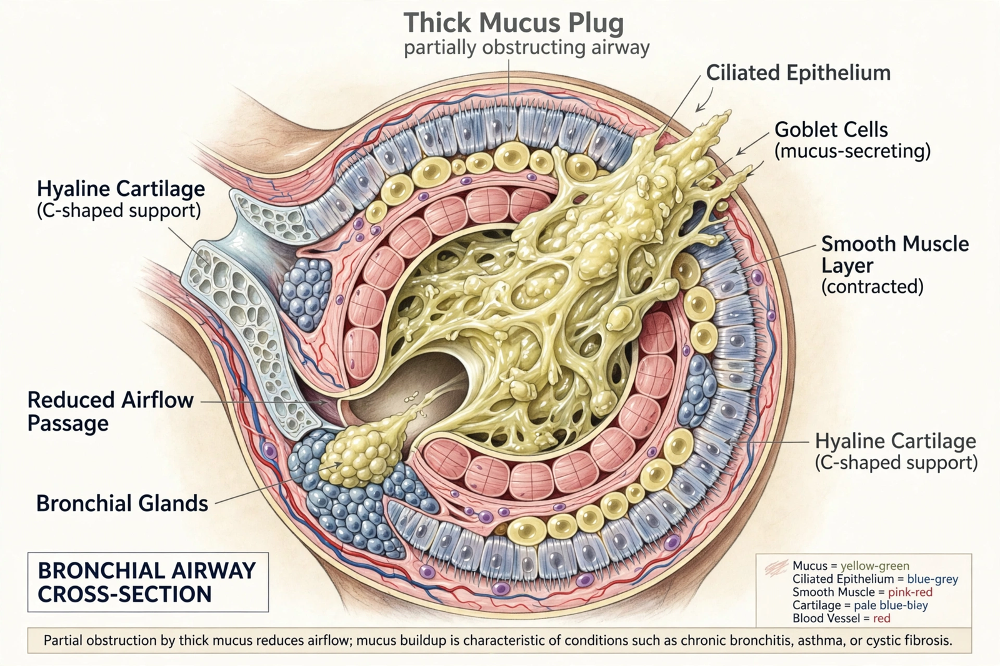

| Cystic fibrosis | |
| Symptoms | Chronic cough, recurrent lung infections, poor growth, salty-tasting skin, digestive problems |
|---|---|
| Cause | Mutations in the CFTR gene (autosomal recessive) |
| Diagnosis | Sweat chloride test, genetic testing, newborn screening |
| Treatment | Airway clearance, antibiotics, pancreatic enzymes, CFTR modulators |
| Frequency | About 1 in 2,500–3,500 newborns of European ancestry |
Cystic fibrosis (CF) is a genetic disorder that affects mostly the lungs but also the pancreas, liver, kidneys, and intestine. It is caused by mutations in both copies of the gene encoding the cystic fibrosis transmembrane conductance regulator (CFTR) protein, a chloride channel that regulates salt and water transport across epithelial surfaces. Long-term issues include difficulty breathing and coughing up mucus from recurrent lung infections.
The defective channel produces abnormally thick, sticky mucus. In the lungs this obstructs airways and traps bacteria, leading to chronic infection — particularly with Pseudomonas aeruginosa — inflammation, bronchiectasis, and progressive respiratory failure. In the pancreas, blocked ducts prevent digestive enzymes from reaching the intestine, causing malabsorption and poor growth unless enzyme supplements are taken. Other features include salty-tasting skin (the basis of the diagnostic sweat test), sinus disease, diabetes, liver disease, and infertility in most males due to congenital absence of the vas deferens.
CF is inherited in an autosomal recessive pattern. The most common mutation, ΔF508, accounts for roughly two-thirds of CF chromosomes worldwide; carriers, who have one mutated copy, are healthy and may number over 30 million people. More than 2,000 CFTR variants are known.
Diagnosis rests on the sweat chloride test, genetic testing, and clinical features. Most developed countries screen newborns for CF using immunoreactive trypsinogen followed by DNA testing or sweat testing.
There is no cure, but treatment has steadily improved survival. Care centers on airway clearance techniques, inhaled mucolytics such as dornase alfa and hypertonic saline, antibiotics, and pancreatic enzyme replacement. Since 2012, CFTR modulator drugs — potentiators and correctors — have addressed the underlying protein defect for most patients; the triple combination elexacaftor/tezacaftor/ivacaftor (2019) applies to roughly 90% of people with CF and has markedly improved lung function and life expectancy, which now extends into the sixth decade for many patients in wealthy countries.
The disease was recognized and named by Dorothy Andersen in 1938; the sweat abnormality was described during a New York heat wave in 1948–53, and the causative gene was identified in 1989.